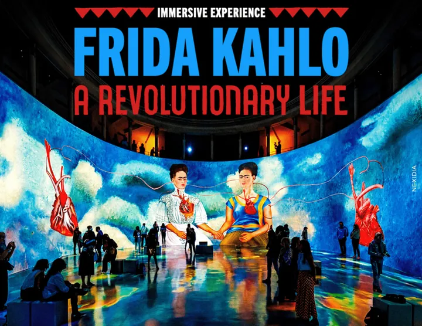

da sab 30 mag a dom 11 ott
Frida Kahlo - A Revolutionary Life
Un viaggio in tredici tappe, tante quanti sono i mesi del calendario lunare proprio delle civiltà matriarcali, per raccontare la vita e l’immaginario di un’artista assurta a icona pop del contemporaneo. Al Teatro Ristori, dal 30 maggio all'11 ottobre 2026 , una nuova esperienza…
 Indicazioni
Indicazioni
- Costi e prenotazioni
- Costo non indicato · Prenotazione non indicata
- Programma
- Programma da verificare. Apri la fonte ufficiale per orari e possibili aggiornamenti.
- In caso di maltempo
- Nessuna indicazione specifica pubblicata.
- Note
- Acquisito automaticamente dalla fonte.
L’EVENTO
Descrizione completa
Un viaggio in tredici tappe, tante quanti sono i mesi del calendario lunare proprio delle civiltà matriarcali, per raccontare la vita e l’immaginario di un’artista assurta a icona pop del contemporaneo. Al Teatro Ristori, dal 30 maggio all'11 ottobre 2026 , una nuova esperienza immersiva firmata da Massimiliano Siccardi e Luca Longobardi e Vittorio Guidotti è pronta ad affascinare il pubblico.
È Frida Kahlo - A Revolutionary Life , un sogno dedicato all’artista più celebre del Messico; un percorso dalle sue radici a La Casa Azul al suo spirito rivoluzionario, in un viaggio ricco di suggestioni attraverso l’identità e l’immaginazione di un’icona globale.
Le immagini, realizzate con tecniche miste, spaziano dal disegno a mano all’intelligenza artificiale, effigiando uno straordinario poema visivo che si dipana in un potente affresco cinetico, capace di restituire al pubblico quell’insieme di arte folklorica, surrealismo, misticismo e realismo magico che caratterizzano la sorgente creativa a cui ha attinto Frida Kahlo, ben rappresentata nella incredibile serie rivelatrice di autoritratti. Uno sguardo che è sostenuto dal suono delle note di una musica che attraversa epoche e linguaggi : da Grazie alla vita di Violeta Parra interpretata da Gabriella Ferri all’Ave Maria eseguita da Mina, dalla reinterpretazione di Florence + the Machine di Stand by me di Benjamin Nelson, Jerry Leiber e Mike Stoller a La vie en rose di Edith Piaf cantata dal vivo da Madonna fino a brani originali Mi Pais o Aura.
L'esperienza immersiva è fruibile dal lunedì al giovedì dalle 14.00 alle 20.00, mentre dal venerdì alla domenica dalle 14.00 alle 22.00.
IL PROGRAMMA
Programma e orari
Appuntamenti raccolti dalle fonti elencate. Dove manca un orario, non è ancora disponibile in questa scheda.
Programma pubblicato
- 2026-05-30 — 2026-10-11 ·
INFORMAZIONI UTILI
Prima di partire
- Controllare la fonte prima di partire.
ORGANIZZAZIONE